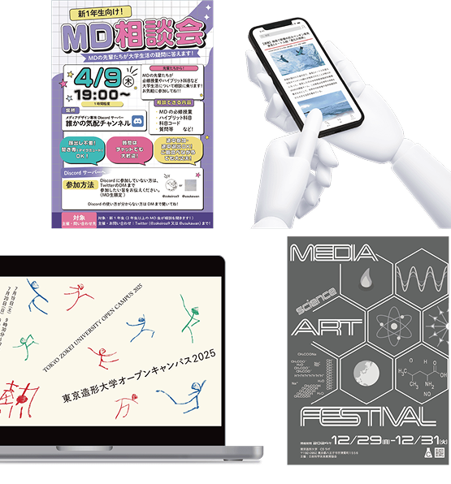
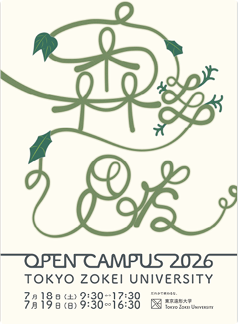
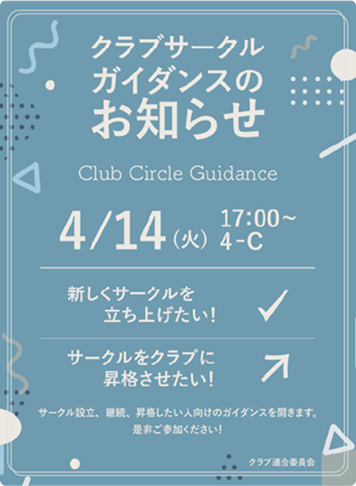
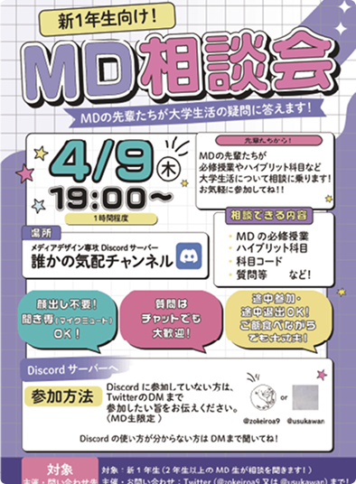

WORKS
SKILL
★★★★☆
★★★★☆
★★★★☆
★★★★☆
★★★☆☆
★★★☆☆
Illustration

森の思考
「森の中の美術大学を観察したら」というコンセプトから着想を得て、自然の有機的な広がりと、そこから生まれる学生たちの思考の深まりを、複雑に絡み合うグリーンの線画で表現しました。豊かな自然環境に囲まれた大学ならではのアイデンティティを視覚化したグラフィックデザインです。
個人ワーク
クラブガイダンス
学内のクラブ連合委員会からの依頼により制作した。課外活動の活発さや選択肢の多様性を伝えるため、爽やかなブルーを基調に、直感的に伝わるアイコニックな矢印やチェックマークのグラフィックを配置しました。
グループワーク
MD相談会
新入生をサポートする相談窓口「MD相談会」の告知ポスター。大学生活に不安を抱える新入生が気軽に足を運べるよう、温かみのあるパープルやピンクのカラーパレットを採用しました。親しみやすいレイアウトと「優しく迎え入れる」トーン＆マナーを心がけました。
個人ワークWebsite
OC/造熱
東京造形大学オープンキャンパス2025の特設Webサイト。学生たちの内に秘めた「クリエイティブの熱量」を視覚化することをテーマに、躍動感のあるタイポグラフィと自由なビジュアル配置で構成しました。サイトを訪れた人が大学の持つエネルギーを肌で感じられるような、熱量のあるデザインを目指しました。
グループワークOC/SPICE
東京造形大学オープンキャンパス2026の特設Webサイト。多様な個性を「SPICE」に見立て、刺激的で鮮やかなイエローをベースカラーに採用しました。遊び心のあるキャッチーなイラストと、直感的なナビゲーションを両立させ、大学の自由で刺激的な校風をWeb上で表現しています。
グループワークもちや屋
伝統的な和菓子と日本茶を提供するブランド「もちや屋」のコンセプトサイト。抹茶や茶道具が持つ静けさや質感を美しく伝えるため、余白を贅沢に活かしたミニマルなレイアウトを採用しました。老舗の品格を保ちつつ、現代のライフスタイルに溶け込む洗練されたトーン＆マナーを意識しています。
個人ワークもちや屋
伝統的な和菓子と日本茶を提供するブランド「もちや屋」のコンセプトサイト。抹茶や茶道具が持つ静けさや質感を美しく伝えるため、余白を贅沢に活かしたミニマルなレイアウトを採用しました。老舗の品格を保ちつつ、現代のライフスタイルに溶け込む洗練されたトーン＆マナーを意識しています。
個人ワークUI/UX
F or F
ニュースの真偽を確認しながら判断力や思考力を養うフェイクニュースアプリのUI/UXデザイン。親しみやすい配色と直感的な操作性を重視し、またユーザーが迷うことなく目的の機能にアクセスできる快適な動線設計を行いました。
個人ワークTOIRO
教育機関で先生不足から生じる問題を解決するためのアプリ。日常の中で育つ内面的な能力を色として表現し成長を記録する「心の通信簿」
インターンにて制作した作品になります。
※AIを使用しました
八王子市彫刻巡りスタンプラリー
八王子に点在するはシンポジウム彫刻作品をYAMAHAモビリテスを使用したデジタルスタンプラリー。
本企画はYAMAHA様との産学連携のもと開発しています。
Motion Graphics
STRUCTURE
「構造」をテーマにしたミニマルでソリッドなモーショングラフィックス作品。深い黒を基調とした空間の中に、シャープな光のラインと幾何学的なオブジェクトを配置し、建築的な緊迫感と美しさを表現しました。静と動のコントラストを意識した、音とシンクロする映像設計です。
個人ワークデジタルサイネージ
東京造形大学のオープンキャンパスの「SPICE」をメインテーマにしたデジタルサイネージ作品。絵コンテから制作までグループワークでの制作を行いました。展示場所は新宿駅京王線入口エリア。
グループワーク